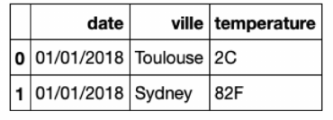
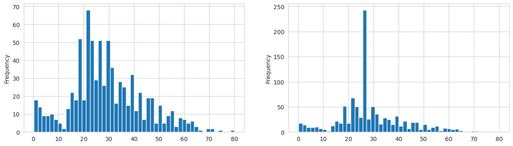

Feature engineering — les bases#
Qu’est-ce qu’on va faire dans ce notebook ?#
On a vu dans le chapitre précédent que les données brutes ne suffisent pas à un modèle de machine learning. Ce notebook montre en pratique les gestes essentiels de feature engineering pour préparer un dataset typique (le Titanic) à être utilisé par un algorithme de classification.
L’objectif n’est pas d’obtenir le meilleur score possible — c’est de mettre en place un pipeline propre et réutilisable qui fait correctement le travail de base : imputation des valeurs manquantes, encodage des variables catégorielles, combinaison de plusieurs transformations, et déploiement en production.
Le plan#
Nettoyage initial (data cleaning) : homogénéisation des noms, types, formats.
Split train/test : isoler le test avant toute analyse, pour éviter le data leakage.
Imputation des valeurs manquantes : médiane pour les numériques, mode pour les catégorielles.
Encodage des variables catégorielles : transformer
sex,embarkeden nombres utilisables.Pipeline unifié : combiner toutes les étapes avec
ColumnTransformer+Pipeline.Entraînement et comparaison de plusieurs modèles (régression logistique, Random Forest, XGBoost).
Baseline : s’assurer qu’on fait mieux qu’un prédicteur bête.
Déploiement : sérialiser le pipeline et le modèle pour la production.
Data cleaning — mise en forme des données#
C’est la phase initiale du feature engineering. On cherche à rendre les données :
conformes aux règles de nommage de l’entreprise (noms de colonnes, valeurs de catégories :
"Sexe"vs"sex","M"vs"Male"vs"male"…) ;homogènes (même format partout : dates au même format, unités cohérentes, encodage texte uniforme) ;

compatibles avec les algorithmes :
toutes les valeurs renseignées (pas de
NaN) ;toutes les valeurs numériques (les catégories en texte seront encodées plus tard).
C’est souvent l’étape la plus longue et la moins gratifiante — mais celle qui évite 80% des bugs. Passer du temps ici, c’est du temps gagné sur le debug plus tard.
import warnings
warnings.simplefilter(action='ignore', category=FutureWarning)
import numpy as np
import matplotlib.pyplot as plt
import seaborn as sns
import pandas as pd
sns.set_style('whitegrid')
from sklearn.datasets import fetch_openml
from sklearn.model_selection import train_test_split
from sklearn.linear_model import LogisticRegression
from sklearn.model_selection import cross_val_score
titanic = pd.read_csv("../../data/titanic.csv")
titanic1 = titanic.drop("survived", axis=1)
survived = titanic["survived"]
titanic1.head()
| pclass | name | sex | age | sibsp | parch | ticket | fare | cabin | embarked | boat | body | home.dest | |
|---|---|---|---|---|---|---|---|---|---|---|---|---|---|
| 0 | 1 | Allen, Miss. Elisabeth Walton | female | 29.0000 | 0 | 0 | 24160 | 211.3375 | B5 | S | 2 | NaN | St Louis, MO |
| 1 | 1 | Allison, Master. Hudson Trevor | male | 0.9167 | 1 | 2 | 113781 | 151.5500 | C22 C26 | S | 11 | NaN | Montreal, PQ / Chesterville, ON |
| 2 | 1 | Allison, Miss. Helen Loraine | female | 2.0000 | 1 | 2 | 113781 | 151.5500 | C22 C26 | S | NaN | NaN | Montreal, PQ / Chesterville, ON |
| 3 | 1 | Allison, Mr. Hudson Joshua Creighton | male | 30.0000 | 1 | 2 | 113781 | 151.5500 | C22 C26 | S | NaN | 135.0 | Montreal, PQ / Chesterville, ON |
| 4 | 1 | Allison, Mrs. Hudson J C (Bessie Waldo Daniels) | female | 25.0000 | 1 | 2 | 113781 | 151.5500 | C22 C26 | S | NaN | NaN | Montreal, PQ / Chesterville, ON |
survived.shape
(1309,)
Création des jeux d’apprentissage et de test#
⚠️ L’ordre des opérations est critique : on splitte train/test AVANT tout feature engineering. Sinon, on risque le data leakage — des informations du test « fuitent » vers le train via les transformations (moyennes d’imputation, seuils de scaling, proportions d’encodage…).
L’analogie à garder en tête : le jeu de test, c’est l”examen final. L’EDA et le feature engineering, c’est la préparation à l’examen. Si tu regardes les questions de l’examen avant de préparer tes révisions, ton 20/20 ne veut plus rien dire. Le test doit rester scellé jusqu’à la toute fin.
X_train, X_test, y_train, y_test = train_test_split(
titanic1,
survived,
test_size=0.25,
random_state=2
)
y_train = y_train.values.astype(int)
y_test = y_test.values.astype(int)
X_train.info()
<class 'pandas.core.frame.DataFrame'>
Index: 981 entries, 1195 to 1192
Data columns (total 13 columns):
# Column Non-Null Count Dtype
--- ------ -------------- -----
0 pclass 981 non-null int64
1 name 981 non-null object
2 sex 981 non-null object
3 age 789 non-null float64
4 sibsp 981 non-null int64
5 parch 981 non-null int64
6 ticket 981 non-null object
7 fare 980 non-null float64
8 cabin 225 non-null object
9 embarked 980 non-null object
10 boat 373 non-null object
11 body 89 non-null float64
12 home.dest 568 non-null object
dtypes: float64(3), int64(3), object(7)
memory usage: 107.3+ KB
X_test.info()
<class 'pandas.core.frame.DataFrame'>
Index: 328 entries, 886 to 916
Data columns (total 13 columns):
# Column Non-Null Count Dtype
--- ------ -------------- -----
0 pclass 328 non-null int64
1 name 328 non-null object
2 sex 328 non-null object
3 age 257 non-null float64
4 sibsp 328 non-null int64
5 parch 328 non-null int64
6 ticket 328 non-null object
7 fare 328 non-null float64
8 cabin 70 non-null object
9 embarked 327 non-null object
10 boat 113 non-null object
11 body 32 non-null float64
12 home.dest 177 non-null object
dtypes: float64(3), int64(3), object(7)
memory usage: 35.9+ KB
Data cleaning — traitement des valeurs manquantes#
En pratique, les valeurs manquantes (NaN) sont partout. Un capteur qui a planté, un formulaire pas rempli, une fusion de fichiers incomplète, une API qui a timeouté… Il faut les traiter sous peine que la plupart des algorithmes scikit-learn plantent.
Deux grandes stratégies :
Supprimer les lignes (ou les colonnes) qui en contiennent.
Imputer : remplacer par une valeur « raisonnable » (moyenne, médiane, mode, valeur prédite, valeur sentinelle…).
On va voir les deux cas dans la suite — et pourquoi l’imputation est presque toujours préférable.
Diagnostic rapide : info() nous montre que age, fare et embarked ont des valeurs manquantes dans le jeu de train.
Décision par colonne :
fareetembarked: très peu de NaN (1 ou 2 lignes). On pourrait penser à supprimer ces lignes.age: il manque beaucoup de valeurs (environ 20%). Hors de question de supprimer autant de lignes — on va imputer, en affectant par exemple la médiane.
Pourquoi ne pas supprimer « juste les quelques lignes » ?
C’est tentant — 1 ou 2 lignes manquantes sur 1000, ça paraît anodin. Mais cela signifie qu”à l’avenir, si un nouveau passager a une valeur manquante dans
fareouembarked, on ne pourra pas faire de prédiction pour lui. Le modèle ne saura pas quoi faire.En production, la tolérance aux valeurs manquantes est essentielle. Un modèle qui fonctionne seulement si toutes les colonnes sont remplies est un modèle fragile. On préfère donc adopter une approche plus générale et toujours imputer, même pour les colonnes où il manque très peu de données.
Règle pratique : toujours avoir une stratégie d’imputation pour chaque colonne, même si elle semble complète sur le train. Ça rend le pipeline robuste et prêt pour la production.
Imputation des colonnes numériques#
On utilise un SimpleImputer avec strategy='median' : les NaN sont remplacés par la médiane de chaque colonne (calculée sur le train uniquement).
Pourquoi la médiane et pas la moyenne ? Parce que la médiane est robuste aux outliers. Rappelle-toi du fare du Titanic : quelques billets très chers tirent la moyenne vers le haut sans être représentatifs. La médiane reflète mieux « la valeur typique ».
On inclut les colonnes ordinales (
pclass) dans cette imputation : elles sont déjà encodées en numérique (1, 2, 3) et la médiane d’une variable ordinale a du sens (c’est la catégorie du milieu).
from sklearn.impute import SimpleImputer
numeric_cols = ["pclass", "age", "sibsp", "parch", "fare"]
X_train_num = X_train[numeric_cols]
median_imputer = SimpleImputer(missing_values=np.nan, strategy='median')
median_imputer.fit(X_train_num)
X_train_num = pd.DataFrame(median_imputer.transform(X_train_num),
columns=numeric_cols)
X_train_num.info()
<class 'pandas.core.frame.DataFrame'>
RangeIndex: 981 entries, 0 to 980
Data columns (total 5 columns):
# Column Non-Null Count Dtype
--- ------ -------------- -----
0 pclass 981 non-null float64
1 age 981 non-null float64
2 sibsp 981 non-null float64
3 parch 981 non-null float64
4 fare 981 non-null float64
dtypes: float64(5)
memory usage: 38.4 KB
Vérifier l’effet de l’imputation est un réflexe sain. On compare la distribution de age avant et après imputation avec deux histogrammes côte à côte.
fig, (ax1, ax2) = plt.subplots(1, 2, figsize=(15, 4))
X_train["age"].plot(kind="hist", bins=50, ax=ax1)
X_train_num["age"].plot(kind="hist", bins=50, ax=ax2);

Observation attendue : on voit une surreprésentation de la médiane (un pic démesurément grand à la valeur médiane). C’est le principal défaut de l’imputation par constante : tous les NaN convergent vers la même valeur, ce qui crée un artefact visible dans la distribution.
🎯 Conséquences en ML :
Le pic artificiel peut fausser les analyses de distribution ultérieures.
Il peut biaiser certains algorithmes qui raisonnent en termes de densité (KDE, GMM).
Un arbre de décision, lui, s’en sort bien — il va juste créer une branche « age == valeur-médiane ? » qui correspondra aux imputés.
Alternatives plus sophistiquées (vues plus tard dans le chapitre 07) :
IterativeImputer: prédit la valeur manquante en utilisant les autres colonnes comme features (régression).
KNNImputer: prend la moyenne des \(k\) voisins les plus proches.Ajouter une colonne indicatrice
age_was_missing(booléen) pour laisser le modèle savoir « cette valeur était manquante » — utile si la présence de NaN elle-même est informative.
Imputation des colonnes catégorielles#
Pour les colonnes catégorielles (sex, embarked), la médiane ne marche pas (qu’est-ce que la « médiane » entre male et female ?). On utilise à la place strategy='most_frequent' : les NaN sont remplacés par la valeur la plus fréquente (le mode).
Pourquoi le mode ? Parce qu’en l’absence d’information, c’est le choix le plus probable. Si 75% des passagers ont embarqué à Southampton, imputer Southampton pour un passager dont on ne connaît pas le port est la meilleure « estimation naïve » qu’on puisse faire.
Limites : comme pour la médiane sur les numériques, on crée une sur-représentation du mode. Si c’est problématique, on peut utiliser
strategy='constant'avec une valeur sentinelle comme"missing"pour créer une catégorie « manquant » à part, que les modèles à base d’arbres peuvent très bien exploiter.
categorical_cols = ["sex", "embarked"]
X_train_cat = X_train[categorical_cols]
most_frequent_imputer = SimpleImputer(missing_values=np.nan,
strategy='most_frequent')
most_frequent_imputer.fit(X_train_cat)
X_train_cat = pd.DataFrame(most_frequent_imputer.transform(X_train_cat),
columns=categorical_cols)
X_train_cat.info()
<class 'pandas.core.frame.DataFrame'>
RangeIndex: 981 entries, 0 to 980
Data columns (total 2 columns):
# Column Non-Null Count Dtype
--- ------ -------------- -----
0 sex 981 non-null object
1 embarked 981 non-null object
dtypes: object(2)
memory usage: 15.5+ KB
Combinaison des transformations avec ColumnTransformer#
Jusqu’ici on a appliqué les imputations colonne par colonne, à la main. Peu pratique. Le ColumnTransformer permet d”appliquer des transformations différentes à des colonnes différentes, le tout dans un seul objet scikit-learn.
Mental model :
ColumnTransformer, c’est comme une orchestration de tapis roulants : chaque colonne passe par le traitement approprié (numérique → imputation médiane, catégoriel → imputation mode), et tout ressort dans le même tableau final, colonnes réassemblées dans le bon ordre.
Points clés du code ci-dessous :
On définit chaque « transformer » avec une liste
(nom, transformer, colonnes).Le paramètre
remainder='drop'exclut les colonnes non mentionnées (sinon on peut utiliser'passthrough'pour les laisser inchangées).Après
fit, leColumnTransformerconnaît les statistiques (médianes, modes) apprises sur le train et peut les réappliquer au test avectransform.
from sklearn.compose import ColumnTransformer
column_trans = ColumnTransformer(
[
('numerical', median_imputer, numeric_cols),
('categorical', most_frequent_imputer, categorical_cols),
], remainder='drop', verbose_feature_names_out=False
)
column_trans.fit(X_train)
ColumnTransformer(transformers=[('numerical', SimpleImputer(strategy='median'),
['pclass', 'age', 'sibsp', 'parch', 'fare']),
('categorical',
SimpleImputer(strategy='most_frequent'),
['sex', 'embarked'])],
verbose_feature_names_out=False)In a Jupyter environment, please rerun this cell to show the HTML representation or trust the notebook. On GitHub, the HTML representation is unable to render, please try loading this page with nbviewer.org.
ColumnTransformer(transformers=[('numerical', SimpleImputer(strategy='median'),
['pclass', 'age', 'sibsp', 'parch', 'fare']),
('categorical',
SimpleImputer(strategy='most_frequent'),
['sex', 'embarked'])],
verbose_feature_names_out=False)['pclass', 'age', 'sibsp', 'parch', 'fare']
SimpleImputer(strategy='median')
['sex', 'embarked']
SimpleImputer(strategy='most_frequent')
X_train_trans = pd.DataFrame(column_trans.transform(X_train), columns=column_trans.get_feature_names_out())
X_train_trans.head()
| pclass | age | sibsp | parch | fare | sex | embarked | |
|---|---|---|---|---|---|---|---|
| 0 | 3.0 | 27.0 | 0.0 | 0.0 | 7.75 | male | Q |
| 1 | 3.0 | 37.0 | 2.0 | 0.0 | 7.925 | male | S |
| 2 | 1.0 | 60.0 | 0.0 | 0.0 | 26.55 | male | S |
| 3 | 3.0 | 33.0 | 0.0 | 0.0 | 7.8542 | male | S |
| 4 | 2.0 | 29.0 | 1.0 | 0.0 | 26.0 | female | S |
Feature transformation — traitement des données catégorielles#
Le problème : les algorithmes ML attendent des nombres. Les colonnes sex (male, female) et embarked (S, C, Q) sont du texte — il faut les convertir.
Pour pclass : pas de problème#
pclass est une variable ordinale (1ère < 2ème < 3ème). L’encodage numérique existant est naturel et les algorithmes pourront en tirer parti directement.
Pour sex et embarked : attention au piège#
Si on fait naïvement male → 0, female → 1 (ou S → 0, C → 1, Q → 2), on impose un ordre qui n’existe pas dans la réalité. Les algorithmes vont alors raisonner en termes de distance :
male → 0etfemale → 1: distance = 1.setosa → 0,virginica → 1,versicolor → 2: le modèle « croit » que versicolor est plus proche de virginica que de setosa. C’est faux — ce sont juste trois espèces différentes.
🎯 Pourquoi c’est grave ? La plupart des algorithmes (KNN, SVM, réseaux de neurones, régression linéaire) fondent leurs décisions sur des distances entre points. Un encodage qui introduit un faux ordre perturbe directement ces distances et dégrade la qualité du modèle.
La bonne solution pour les variables nominales : le one-hot encoding.
One-hot encoding#
L’idée : transformer une colonne à \(N\) catégories en \(N\) colonnes binaires (une par catégorie). Chaque ligne a un 1 dans la colonne de sa catégorie et 0 partout ailleurs.
Exemple sur embarked :
embarked |
→ |
embarked_C |
embarked_Q |
embarked_S |
|---|---|---|---|---|
S |
0 |
0 |
1 |
|
C |
1 |
0 |
0 |
|
Q |
0 |
1 |
0 |
Plus aucun ordre artificiel entre les catégories : chacune a « sa » colonne indépendante.
On utilise OneHotEncoder de scikit-learn.
⚠️ Limites du one-hot encoding :
Explosion de dimensionnalité : si une variable a 1000 catégories distinctes (ex : un code postal), on crée 1000 colonnes. Pour ces cas, on préfère du target encoding, des embeddings, ou du hashing.
Catégories inconnues au test : si le test contient une catégorie jamais vue en train, par défaut
OneHotEncoderplante. Utiliserhandle_unknown='ignore'pour que les catégories inconnues donnent juste des 0 partout.Colinéarité : les \(N\) colonnes sont linéairement dépendantes (leur somme = 1). Certains modèles (régression linéaire) préfèrent supprimer une colonne — c’est ce que fait
drop='first'.
from sklearn.preprocessing import OneHotEncoder
cat_encoder = OneHotEncoder(sparse_output=False)
cat_encoder.fit(X_train_cat)
X1_train_cat = pd.DataFrame(cat_encoder.transform(X_train_cat), columns=cat_encoder.get_feature_names_out())
X1_train_cat.info()
<class 'pandas.core.frame.DataFrame'>
RangeIndex: 981 entries, 0 to 980
Data columns (total 5 columns):
# Column Non-Null Count Dtype
--- ------ -------------- -----
0 sex_female 981 non-null float64
1 sex_male 981 non-null float64
2 embarked_C 981 non-null float64
3 embarked_Q 981 non-null float64
4 embarked_S 981 non-null float64
dtypes: float64(5)
memory usage: 38.4 KB
Pipeline de preprocessing complet#
L’étape finale : combiner imputation + encodage dans un seul objet via un Pipeline.
Pourquoi un Pipeline ?
Zéro data leakage automatiquement : le pipeline
fittoutes les étapes sur le train uniquement, ettransformle test sans rien y apprendre. C’est la garantie la plus simple d’éviter les fuites.Cross-validation correcte : quand on passe un pipeline à
cross_val_score, chaque fold calcule ses propres statistiques d’imputation / encodage (correct). Sans pipeline, on doit le faire à la main — et on se trompe presque toujours.Déploiement simple : un seul objet à sauvegarder (
joblib.dump(pipeline, 'pipe.pkl')) pour refaire exactement le même traitement en production.Code lisible : toute la logique est centralisée. Pas de variables intermédiaires
X_train_imputed_then_encoded_scaled_normalizedqui polluent le notebook.👉 En production, c’est LA bonne pratique. Ne jamais chaîner des
.fit_transform()à la main quand on peut utiliser un Pipeline.
from sklearn.impute import SimpleImputer
from sklearn.preprocessing import OneHotEncoder
from sklearn.pipeline import Pipeline
from sklearn.compose import ColumnTransformer
median_imputer = SimpleImputer(missing_values=np.nan, strategy='median')
most_frequent_imputer = SimpleImputer(missing_values=np.nan, strategy='most_frequent')
categorical_encoder = OneHotEncoder(sparse_output=False)
categorical_pipeline = Pipeline(steps=[
("categorical_imputer", most_frequent_imputer),
("categorical_encoder", categorical_encoder)
])
preprocessor = ColumnTransformer(
[
('numeric_imputer', median_imputer, numeric_cols),
('categorical', categorical_pipeline, categorical_cols),
], remainder='drop', verbose_feature_names_out=False
)
preprocessor.fit(X_train)
ColumnTransformer(transformers=[('numeric_imputer',
SimpleImputer(strategy='median'),
['pclass', 'age', 'sibsp', 'parch', 'fare']),
('categorical',
Pipeline(steps=[('categorical_imputer',
SimpleImputer(strategy='most_frequent')),
('categorical_encoder',
OneHotEncoder(sparse_output=False))]),
['sex', 'embarked'])],
verbose_feature_names_out=False)In a Jupyter environment, please rerun this cell to show the HTML representation or trust the notebook. On GitHub, the HTML representation is unable to render, please try loading this page with nbviewer.org.
ColumnTransformer(transformers=[('numeric_imputer',
SimpleImputer(strategy='median'),
['pclass', 'age', 'sibsp', 'parch', 'fare']),
('categorical',
Pipeline(steps=[('categorical_imputer',
SimpleImputer(strategy='most_frequent')),
('categorical_encoder',
OneHotEncoder(sparse_output=False))]),
['sex', 'embarked'])],
verbose_feature_names_out=False)['pclass', 'age', 'sibsp', 'parch', 'fare']
SimpleImputer(strategy='median')
['sex', 'embarked']
SimpleImputer(strategy='most_frequent')
OneHotEncoder(sparse_output=False)
X_train_trans = preprocessor.transform(X_train)
X_train_trans = pd.DataFrame(X_train_trans, columns=preprocessor.get_feature_names_out())
X_train_trans.head()
| pclass | age | sibsp | parch | fare | sex_female | sex_male | embarked_C | embarked_Q | embarked_S | |
|---|---|---|---|---|---|---|---|---|---|---|
| 0 | 3.0 | 27.0 | 0.0 | 0.0 | 7.7500 | 0.0 | 1.0 | 0.0 | 1.0 | 0.0 |
| 1 | 3.0 | 37.0 | 2.0 | 0.0 | 7.9250 | 0.0 | 1.0 | 0.0 | 0.0 | 1.0 |
| 2 | 1.0 | 60.0 | 0.0 | 0.0 | 26.5500 | 0.0 | 1.0 | 0.0 | 0.0 | 1.0 |
| 3 | 3.0 | 33.0 | 0.0 | 0.0 | 7.8542 | 0.0 | 1.0 | 0.0 | 0.0 | 1.0 |
| 4 | 2.0 | 29.0 | 1.0 | 0.0 | 26.0000 | 1.0 | 0.0 | 0.0 | 0.0 | 1.0 |
Apprentissage#
On a maintenant un pipeline de preprocessing fonctionnel. On peut l’enchaîner avec différents modèles et voir ce que ça donne — toujours par cross-validation pour avoir une estimation fiable.
Régression logistique#
On commence avec la régression logistique — le modèle de baseline classique pour la classification binaire. Simple, rapide, interprétable, et souvent étonnamment compétitif comparé à des modèles plus complexes.
Pourquoi commencer simple ? Pour avoir un point de comparaison. Si un modèle simple fait déjà 80%, et que ton réseau de neurones sophistiqué fait 81%, tu ajoutes beaucoup de complexité pour 1 point. Parfois, c’est acceptable. Parfois non. L’important est de savoir où tu en es par rapport à une baseline simple.
logreg_clf = LogisticRegression(max_iter=1000)
logreg_clf_pipeline = Pipeline(steps=[
('preprocessor', preprocessor),
('regressor', logreg_clf)
])
scores = cross_val_score(logreg_clf_pipeline, X_train, y_train, cv=10)
scores, scores.mean(), scores.std()
(array([0.80808081, 0.81632653, 0.7244898 , 0.81632653, 0.70408163,
0.74489796, 0.74489796, 0.80612245, 0.84693878, 0.71428571]),
0.7726448155019584,
0.048659649809981775)
Baseline — s’assurer qu’on fait mieux qu’un idiot#
On vient d’obtenir un score avec un minimum de feature engineering. Ce sera notre étalon pour valider nos expériences ultérieures : chaque amélioration devra faire mieux que cette baseline.
Mais il faut aussi vérifier qu’on se comporte mieux qu’un classifieur trivial. C’est le rôle du DummyClassifier de scikit-learn : il fait des prédictions stupides mais reproductibles (toujours la classe majoritaire, tirage aléatoire pondéré, etc.).
🎯 Pourquoi c’est critique ?
Sur un dataset déséquilibré (99% de classe A, 1% de classe B), un modèle qui prédit toujours A aura 99% d’accuracy… sans rien avoir appris. Si ton « vrai » modèle fait 99.1%, il est à peine mieux qu’un random. Il faut le savoir.
Règle d’or : toujours comparer tes modèles à une DummyClassifier. C’est la vraie baseline — celle qui te dit si ton modèle « fait vraiment quelque chose » ou s’il profite juste du déséquilibre des classes.
from sklearn.dummy import DummyClassifier
dummy_clf = DummyClassifier(strategy="most_frequent")
dummy_clf_pipeline = Pipeline(steps=[
('preprocessor', preprocessor),
('regressor', dummy_clf)
])
dummy_clf_pipeline.fit(X_train, y_train)
dummy_clf_pipeline.score(X_test, y_test)
0.6524390243902439
Autres modèles — monter en complexité#
Maintenant qu’on a une baseline et un modèle linéaire de référence, on peut tester des modèles plus puissants pour voir s’ils apportent un gain significatif. On essaie deux champions des données tabulaires :
RandomForestClassifier: forêt d’arbres de décision, moyenne des prédictions. Robuste, peu de tuning nécessaire, bonne baseline « non-linéaire ».XGBClassifier: gradient boosting optimisé (la bibliothèque XGBoost). État de l’art sur la plupart des problèmes tabulaires — c’est l’algorithme qui a dominé les compétitions Kaggle pendant des années.
Pourquoi ces deux-là ? Parce qu’ils sont insensibles à plein de problèmes qui gênent les modèles linéaires :
Pas besoin de normaliser les features (ils s’en moquent).
Robustes aux outliers.
Gèrent naturellement les relations non-linéaires et les interactions.
Fournissent une importance des features (feature importance) — utile pour l’interprétation.
La règle empirique : sur un problème tabulaire, commence par XGBoost / LightGBM / CatBoost. Si tu ne bats pas ces modèles avec un réseau de neurones, c’est souvent qu’ils sont déjà près de l’optimum.
from sklearn.ensemble import RandomForestClassifier
rf_clf = RandomForestClassifier(max_depth=6, random_state=2)
rf_clf_pipeline = Pipeline(steps=[
('preprocessor', preprocessor),
('regressor', rf_clf)
])
scores = cross_val_score(rf_clf_pipeline, X_train, y_train, cv=10)
scores, scores.mean(), scores.std()
(array([0.83838384, 0.79591837, 0.7755102 , 0.89795918, 0.76530612,
0.81632653, 0.7755102 , 0.79591837, 0.81632653, 0.7755102 ]),
0.8052669552669552,
0.03789625132252176)
from xgboost import XGBClassifier
xgb_clf = XGBClassifier(random_state=2)
xgb_clf_pipeline = Pipeline(steps=[
('preprocessor', preprocessor),
('regressor', xgb_clf)
])
scores = cross_val_score(xgb_clf_pipeline, X_train, y_train, cv=10)
scores, scores.mean(), scores.std()
(array([0.76767677, 0.75510204, 0.79591837, 0.84693878, 0.79591837,
0.74489796, 0.79591837, 0.81632653, 0.84693878, 0.80612245]),
0.7971758400329828,
0.03282927145869996)
On constate de meilleurs résultats avec RandomForestClassifier et XGBClassifier que la régression logistique. C’est cohérent avec l’intuition : le Titanic a des interactions fortes entre variables (sexe × classe × âge → probabilité de survie) que les modèles à base d’arbres capturent naturellement, alors qu’une régression logistique ne modéliserait que des effets additifs sans ces interactions.
Leçon à retenir : le choix de l’algorithme n’est pas neutre. Sur certains problèmes, les modèles linéaires sont suffisants et préférés pour leur interprétabilité. Sur d’autres (comme le Titanic), les ensembles d’arbres dominent. Tester plusieurs algorithmes est un réflexe indispensable.
Passage en production#
Une fois qu’on a un modèle qui fonctionne, il faut pouvoir le déployer : l’utiliser dans une API, un batch de prédiction, une appli web. Le geste technique central est la sérialisation — sauvegarder le modèle entraîné dans un fichier, et le recharger plus tard sans avoir à tout réentraîner.
Deux bibliothèques Python pour ça :
joblib: le choix standard pour scikit-learn. Rapide sur les gros tableaux NumPy (via compression et mmap).pickle: le module Python standard. Fonctionne aussi, légèrement moins optimisé.
⚠️ Piège de la sérialisation :
Versions de bibliothèques : un modèle sauvegardé avec scikit-learn 1.3 peut ne plus charger avec 1.5. Toujours pinner les versions en production (
requirements.txtou lock file) et toujours versionner le code qui a généré le modèle.Sécurité :
joblibetpickleexécutent du code arbitraire lors du chargement. Ne jamais charger un .pkl venant d’une source non vérifiée — c’est une faille de sécurité critique.Alternatives : pour des modèles plus portables, voir ONNX (standard cross-framework), PMML (XML), ou sauver juste les coefficients dans un JSON / Parquet.
Pour l’instant,
joblibest parfait pour cette démo.
Bonne pratique : sauvegarder le pipeline complet (preprocessor + modèle), pas juste le modèle. Sinon, tu dois refaire le preprocessing à la main en production — source d’erreurs classique. Ici, on les sauvegarde séparément pour l’illustration, mais en vrai on aurait tout combiné dans un seul Pipeline :
from sklearn.pipeline import Pipeline
full_pipeline = Pipeline([
('preprocessor', preprocessor),
('model', rf_clf),
])
joblib.dump(full_pipeline, 'full_pipeline.pkl')
Un seul fichier à déployer, un seul .predict(X) à appeler en production. C’est la bonne façon de faire.
import joblib
preprocessor.fit(X_train)
X_train_trans = preprocessor.transform(X_train)
rf_clf = RandomForestClassifier(max_depth=6, random_state=2)
rf_clf.fit(X_train_trans, y_train)
joblib.dump(preprocessor, "preprocessor.pkl")
joblib.dump(rf_clf, "model.pkl")
['model.pkl']
En production, on charge les fichiers déployés via joblib.load(). C’est rapide : pas de ré-entraînement, juste une lecture de fichier.
loaded_preprocessor = joblib.load("preprocessor.pkl")
loaded_model = joblib.load("model.pkl")
On peut ainsi traiter de nouvelles données (en production, celles des vrais utilisateurs ; ici, on simule avec le jeu de test qu’on avait mis de côté).
⚠️ Très important : en production, les nouvelles données doivent passer par exactement le même preprocessor que celui utilisé à l’entraînement. C’est ce que garantit la sauvegarde du pipeline. Toute divergence entre le preprocessing de train et celui de production → bug silencieux qui dégrade les prédictions sans erreur visible.
X_rw_processed = loaded_preprocessor.transform(X_test)
loaded_model.predict(X_rw_processed)
array([1, 1, 0, 1, 0, 0, 0, 0, 1, 0, 0, 0, 0, 1, 0, 0, 1, 0, 0, 0, 0, 0,
0, 0, 0, 0, 1, 1, 0, 0, 1, 0, 1, 0, 0, 0, 0, 0, 0, 0, 0, 0, 1, 1,
0, 0, 1, 0, 0, 0, 1, 0, 0, 0, 0, 0, 0, 0, 0, 0, 0, 0, 0, 0, 0, 0,
1, 1, 0, 0, 0, 1, 0, 0, 0, 0, 1, 0, 0, 1, 0, 1, 0, 0, 1, 0, 1, 0,
0, 0, 0, 0, 1, 1, 0, 0, 0, 0, 1, 0, 0, 1, 0, 0, 0, 0, 0, 0, 0, 1,
0, 1, 0, 0, 0, 0, 0, 1, 0, 0, 0, 1, 0, 0, 0, 1, 0, 0, 0, 1, 1, 0,
0, 1, 0, 0, 0, 1, 0, 0, 0, 0, 0, 0, 0, 1, 0, 1, 1, 1, 1, 0, 1, 0,
0, 0, 0, 0, 1, 0, 0, 0, 0, 0, 0, 0, 0, 0, 0, 0, 1, 0, 0, 0, 0, 0,
1, 1, 0, 0, 1, 0, 1, 1, 1, 0, 1, 0, 0, 0, 0, 0, 0, 0, 0, 0, 0, 0,
0, 0, 0, 1, 0, 0, 1, 1, 1, 0, 1, 0, 0, 1, 0, 1, 0, 1, 0, 0, 0, 0,
0, 0, 0, 0, 0, 0, 0, 1, 0, 0, 1, 0, 0, 0, 1, 0, 0, 0, 0, 0, 0, 1,
0, 0, 0, 1, 1, 0, 1, 1, 1, 0, 0, 0, 0, 0, 1, 0, 0, 0, 0, 0, 1, 0,
1, 0, 0, 1, 1, 0, 0, 0, 0, 0, 1, 0, 0, 1, 0, 0, 1, 1, 0, 1, 0, 0,
0, 0, 0, 0, 0, 0, 0, 1, 0, 0, 0, 0, 1, 1, 0, 0, 0, 0, 0, 1, 1, 0,
1, 1, 0, 0, 0, 0, 0, 1, 0, 0, 0, 0, 1, 0, 1, 0, 0, 0, 0, 1])
🎯 Pour résumer — feature engineering en pratique#
Le workflow standard#
Split train/test d’abord — avant toute analyse ou transformation.
Explorer (EDA) les valeurs manquantes, les types, les distributions sur le train.
Imputer les NaN avec
SimpleImputer(médiane pour numériques, mode pour catégorielles).Encoder les variables catégorielles avec
OneHotEncoder(nominales) ou laisser en numérique (ordinales).Combiner les transformations avec
ColumnTransformer+Pipeline.Entraîner plusieurs modèles avec cross-validation sur le train.
Comparer à une baseline (
DummyClassifier) pour valider que le modèle fait mieux qu’un idiot.Évaluer le meilleur modèle sur le test set (une seule fois).
Sérialiser le pipeline complet pour le déploiement.
Les gestes à avoir en réflexe#
from sklearn.compose import ColumnTransformer
from sklearn.pipeline import Pipeline
from sklearn.impute import SimpleImputer
from sklearn.preprocessing import OneHotEncoder, StandardScaler
numeric_cols = ['age', 'fare', 'sibsp', 'parch']
categorical_cols = ['sex', 'embarked']
preprocessor = ColumnTransformer([
('num', Pipeline([
('imputer', SimpleImputer(strategy='median')),
('scaler', StandardScaler()), # optionnel selon le modèle
]), numeric_cols),
('cat', Pipeline([
('imputer', SimpleImputer(strategy='most_frequent')),
('onehot', OneHotEncoder(handle_unknown='ignore')),
]), categorical_cols),
])
full_pipeline = Pipeline([
('preprocessor', preprocessor),
('model', RandomForestClassifier()),
])
full_pipeline.fit(X_train, y_train)
full_pipeline.score(X_test, y_test)
Ce bloc de code est un squelette réutilisable pour 80% des problèmes tabulaires en data science. Apprends-le par cœur.
Les pièges les plus fréquents#
⚠️ Faire du feature engineering avant le split → data leakage garanti, score optimiste.
⚠️ Oublier
handle_unknown='ignore'surOneHotEncoder→ plantage en prod dès qu’une nouvelle catégorie apparaît.⚠️ Ne pas comparer à une baseline → tu peux célébrer un score de 95% qui est en fait juste le déséquilibre des classes.
⚠️ Déployer le modèle sans le pipeline de preprocessing → preprocessing manuel en prod → divergence → bug silencieux.
⚠️ Utiliser
pickle/joblibsur des fichiers non vérifiés → faille de sécurité (exécution de code arbitraire).⚠️ Ne pas pinner les versions de scikit-learn → le modèle peut ne plus charger après un
pip upgrade.
Pour aller plus loin#
Chapitre 07 — Feature engineering avancé :
IterativeImputer,KNNImputer, transformations de distribution, réduction de dimensionnalité.Target encoding : alternative au one-hot pour les variables catégorielles à haute cardinalité.
Feature selection :
SelectKBest, importance des features, \(L_1\) pour identifier ce qui compte.AutoML : outils comme
auto-sklearn,TPOT,FLAMLqui automatisent une partie de ce pipeline.
Le mot de la fin#
Un pipeline propre vaut plus qu’un modèle brillant. Un modèle à 95% qui plante en production dès la première valeur manquante est inférieur à un modèle à 90% qui tourne sans bug pendant 2 ans. La qualité d’ingénierie du pipeline — reproductibilité, robustesse, clarté — est souvent ce qui distingue un projet qui va en production d’un projet qui reste dans un notebook.